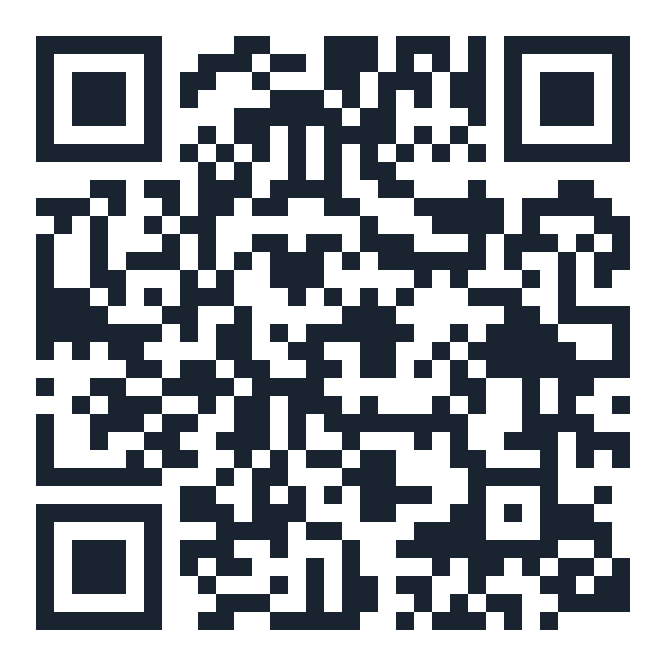

Start here
A calm walk-through
This page explains what Rosie is, who helps behind her, how your privacy is handled, what you need, and how to begin.
Use the big buttons above to play, pause, go back fifteen seconds, or start over. Or tap Listen on any section below to hear just that part.
Section 1
Meet Rosie
Rosie is a companion you talk to out loud — like a patient friend who remembers you.
She is different from ChatGPT in a few ways. She remembers your people, your pill schedule, your lists, and what you like, from one day to the next.
She has quiet helpers behind her for specific jobs. She can check suspicious calls, emails, and texts for scams. She can keep reminders. And if you say yes, she can use your email and calendar.
She goes one step at a time, and she waits for you.
Section 2
Who helps
Rosie is the everyday voice you talk with.
Aunt Patience is her second voice — a calm Southern auntie for sticky problems: scam checks, phone and app setup, billing disputes, paperwork follow-through, and car questions with her quiet car expert, Miss Daisy.
- Alfred Home, meals, groceries, and outings.
- Dolly Bills, budgets, spreadsheets, and getting tax papers organized for your preparer.
- Doc Health notes, pill lists, refills, and questions for your doctor. She never replaces your doctor. In an emergency, she says call 911.
- Joy Music, games, trivia, “Did You Know?” stories, and help with TV and movies.
- Keepsake Life stories, family, photos, and letters.
Section 3
Your privacy
Rosie never asks for passwords, PINs, or full account numbers.
She never moves money.
And she always reads back what she plans to do, then waits for your yes, before sending or scheduling anything.
Section 4
What you need
You need a paid plan that includes Grok Bot. The Premium plan is $30 a month and includes Grok Bot. Higher plans include it too.
You also need the Grok Bot app. It runs on iPhone, iPad, Android phones, Mac, Windows, and Linux computers.
On a phone or tablet, get it from the App Store or Google Play. On a computer, download it from x.ai/bot.
Section 5
Getting started
- Choose the Premium plan — or another plan that includes Grok Bot.
- Download the Grok Bot app and sign in.
- Open the Rosie link your friend shares. Use the button below when it is ready.
- Add Rosie as a new bot.
- Tap the voice button and say hello.
- Rosie asks a few easy questions, one at a time, to get to know you. You can skip any, or stop anytime.
Next step
Open Rosie
Ask your friend to text you the Rosie link.
When you’re ready, say “Hi Rosie, let’s get started,” and she’ll take it from there.
Share
Scan to listen

Meet Rosie — scan to listen